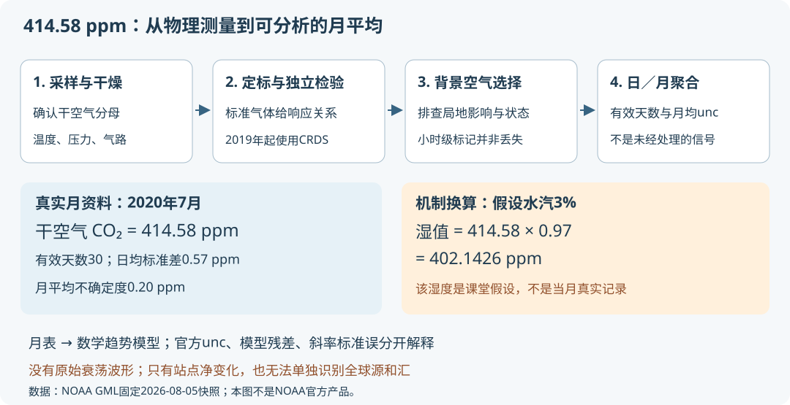

本页目录
真实数据项目 · 414.58 ppm是怎样测出来的？
先修：测量与不确定度、噪声与锁相、光谱与成像。接着用数学项目：趋势、季节与相关误差拟合同一份资料。
1. 先追踪一个真正的观测值
NOAA的固定2026-08-05快照中，Mauna Loa在2020年7月的月均值为414.58 ppm，有效天数30，日均值标准差0.57 ppm，月平均不确定度0.20 ppm。这些数字属于四个不同的量，不是一行“测量精度”。
本项目使用同一份1990—2021月数据子集，把物理测量与数学统计接起来。文件已经经过定标、背景空气筛选、聚合与月中心校正；我们保留的“上游原文”不是原始仪器波形，也不含逐次湿度或ring-down时间。不要把课堂机制算例误认为NOAA未公开的原始读数。
可以直接下载未改写TXT、分析CSV、版本与SHA-256和复算说明。数据由NOAA Global Monitoring Laboratory提供；完整原文注明早期Scripps资料，分析子集只使用NOAA时期。数据与本课程派生模型分开署名，不暗示NOAA背书。
2. ppm的分母，决定你测的到底是什么
本资料测的是干空气CO₂摩尔分数
令水汽在湿空气中的摩尔分数为\(h=n_{\rm H_2O}/n_{\rm air}\)，湿空气CO₂分数\(x_w=n_{\rm CO_2}/n_{\rm air}\)，则只需整理分母便得
假设上述7月空气加入水汽后h=3%，而CO₂与其他干空气分子数之比不变，那么湿值为\(414.58\times0.97=402.1426\) ppm，干值仍为414.58 ppm。水汽没有在这里消灭CO₂；它改变了湿空气计数的分母。
图的纵轴显示“湿值减干值”，参考零点表示干值；表格保留实际ppm数值。水汽滑块是课堂假设，不是所选月份实际湿度。无脚本也可用上面的比例复算。若把湿值直接与官方干值比较，会制造约12.44 ppm的虚假下降，远大于这里0.20 ppm的月均不确定度。
干摩尔分数也不同于单位体积浓度。理想气体近似下，数密度\(c_N=x_dp_d/(k_BT)\)，会随干空气分压\(p_d\)和温度T变化；同一团气体热胀冷缩时，x_d可以保持不变。该关系用于单位解释，并不替代真实气体与仪器的详细修正。
3. 从光学信号到摩尔分数，中间必须有校准
NOAA技术说明指出2019年4月Mauna Loa改用腔衰荡光谱（CRDS），此前使用红外吸收分析仪。因此不能把整段1990—2021记录都画成同一种仪器的直接读数。
理解CRDS可从一个最小速率模型出发：光在高反射腔中多次通过样品，关闭激光后
从而
这里\(\tau_0\)描述参考条件下的腔损耗，τ是有吸收时的时间常数，α为单位长度吸收系数，c为光速。这个简化模型假设腔内损耗可按常数速率相加；真实装置还需波长、谱线、压力、温度、水汽与仪器响应处理。
例如机制算例取\(\tau_0=100\ \mu\mathrm{s}\)、\(\tau=80\ \mu\mathrm{s}\)，则额外衰减率为2500 s⁻¹，\(\alpha\approx8.34\times10^{-6}\ \mathrm{m}^{-1}\)。这还不是ppm：还需把吸收与单位体积的CO₂量联系，再通过受控条件和标准气体转换为干摩尔分数。本数据包没有这些τ值；这里没有用假波形声称重建真实月均值。
为何标准气体不可省？即使知道一个光学关系，实际探测器增益、腔损耗与温压状态仍可能漂移。已知摩尔分数的标准气体确定响应曲线，独立目标气体检验校准，参考气体帮助跟踪短时漂移。校准能发现某些误差，不等于所有系统误差都归零。
4. 仪器读得准确，不等于每小时都代表背景大气
山坡风、局地植物和输运会使站点空气短时偏离想测的背景状态。NOAA按变化平稳性、局地影响和仪器状态标记小时资料，再形成日均、月均。月数据包没有保留每个小时的V/U/D等标记，所以不能声称从月表复核了每一次小时剔除。
我们能检查的是月级别的有效天数和官方质量说明。完整上游文件中，负的标准差/unc或天数可表示插值或早期未知；本1990—2021子集384行质量列均非负。实验提高最少有效天数时会报告实际剔除数，但不能把“剩下更平滑”当成筛选正确的证明。
分析窗口止于2021，避开2022年底火山活动后临时改用Maunakea、2023年恢复Mauna Loa的站点变化。若扩展时间范围，就应把这个观测条件变化纳入版本与模型讨论，而不是静默拼接。

5. 0.57、0.20与0.47为什么都可能是正确的？
2020年7月的daily_std=0.57 ppm描述每日均值波动，monthly_unc=0.20 ppm描述官方月均不确定度。官方处理考虑天气尺度波动与日际相关；所以\(0.57/\sqrt{30}\approx0.104\) ppm并不能替代0.20 ppm。有效天数不是独立重复测量次数。
数学项目默认季节模型在2010—2019的残差RMSE约0.471 ppm，又是另一件事：它混合了测量和天气变化，以及该有限趋势/季节模型没描述的结构。残差大于官方unc，不自动证明仪器坏了；曲线拟合得好，也不能证明测量没有共同校准偏差。
默认训练120个月，时间中心2015，斜率约2.428153 ppm/年；iid斜率标准误0.015350 ppm/年，考虑月相关的HAC示例为0.036299 ppm/年。两种标准误都依赖回归假设，它们与官方逐月unc的单位和估计对象不同。图中的±unc不是回归置信带。
6. 从变化率到排放，缺的是可辨识的物理模型
一个简化、充分混合的箱体可写
这里必须先把C、源E和汇S定义为相容量纲；例如C为箱内CO₂摩尔量，E、S为摩尔/年。即使知道\(dC/dt\)，也只知道差值：对任意函数h，同时令\(E'=E+h,S'=S+h\)，观测变化率不变。只靠C无法把源和汇分别识别出来。
实际单站测量还含空间输运；ppm/年是摩尔分数的变化率，不能直接替换成Gt/年。要推断排放，还需大气总量、空间代表性、输运、源汇与其他观测约束。本项目的真实数据拟合只给一条站点记录在指定模型下的统计描述。
同样，2020—2021留出检验只表示这些行没有用于本课程回归的系数计算；数据本身是2026修订版。我们没有把这项事后练习当成当年的实时预测或新的气候研究结论。
7. 两道迁移题
题一。 同一团干空气的真实CO₂为420 ppm，加入水汽后湿空气水汽摩尔分数为2%。直接报告湿空气ppm是多少？再假设温度不变、干空气压力减半，干摩尔分数与单位体积CO₂数密度各怎样改变？
查看分母变化与体积浓度
湿值为\(420\times0.98=411.6\) ppm。干值仍420 ppm。固定温度下干空气压力减半，在理想气体近似中数密度\(x_dp_d/(k_BT)\)减半，干摩尔分数不变。前者是每单位体积的分子数，后者是分子数之比，不能用同一个“浓度不变”含糊描述。
题二。 两组独立仪器共用一个有偏的标准气体，彼此读数很一致。能否据此断言绝对准确？若月曲线给出了箱体净增加5 mol/年，写出两组不同的非负源汇数值，并说明加入更高阶多项式拟合是否能把它们分开。
查看共同系统误差与不可辨识性
仪器间一致能检验部分独立误差，却可能看不到共用标准带来的偏差；还需独立溯源或不同校准链。源汇可取\((E,S)=(8,3)\)或\((15,10)\) mol/年，都给净增加5。更复杂多项式只拟合净变化，不能由同一观测增加关于E与S的独立约束。若未加入新的物理条件或观测，两种机制仍不可辨识。
速查与资料
先确认干/湿分母，再确认校准和背景选择；月均unc、回归残差和参数标准误各自有定义；站点趋势不能直接变成全球排放。原始方法见NOAA测量说明，数据聚合、不确定度和站点变化见月均值说明，数据使用条件见GML条款。核查：2026-09-09。